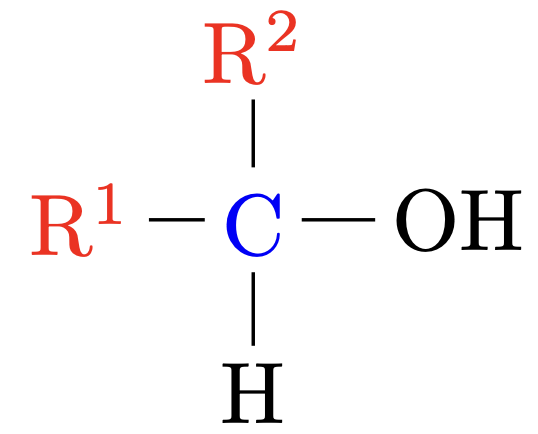

Alkohole
Grundlagen
Alkohole sind Stoffe deren Moleküle eine Hydroxygruppe $\ce{R–OH}$ enthalten.
Als funktionelle Gruppe bezeichnet man die polare Hydroxygruppe. Sie hat groβe Auswirkungen auf physikalische und chemische Eigenschaften.
Trinkalkohol
Ethanol bezeichnet man als Trinkalkohol
Alkanole
Alkohole, in deren Molekülen keine andere funktionelle Gruppe auβer der Hydroxygruppe vorhanden ist bezeichnet man auch noch als Alkanole.
Homologe Reihe der Alkanole
Name |
Summenformel |
Halbstrukturformel |
|---|---|---|
Methanol |
$\ce{CH4O}$ |
$\ce{CH3-OH}$ |
Ethanol |
$\ce{C2H6O}$ |
$\ce{CH3-CH2-OH}$ |
1-Propanol |
$\ce{C3H8O}$ |
$\ce{CH3-CH2-CH2-OH}$ |
1-Butanol |
$\ce{C4H10O}$ |
$\ce{CH3-CH2-CH2-CH2-OH}$ |
1-Pentanol |
$\ce{C5H12O}$ |
$\ce{CH3-(CH2)4-OH}$ |
1-Hexanol |
$\ce{C6H14O}$ |
$\ce{CH3-(CH2)5-OH}$ |
1-Heptanol |
$\ce{C7H16O}$ |
$\ce{CH3-(CH2)6-OH}$ |
Formel
Allgemein gilt für Alkanole:
$$ \ce{C_nH_{2n+1}OH} $$Isomere
Primäre Alkohole |
Das $\ce{C}$-Atom welches die $\ce{OH}$-Gruppe trägt ist mit einem anderen $\ce{C}$-Atom verbunden. |
|
Sekundäre Alkohole |
Das $\ce{C}$-Atom welches die $\ce{OH}$-Gruppe trägt ist mit zwei anderen $\ce{C}$-Atom verbunden. |
 |
Tertiäre Alkohole |
Das $\ce{C}$-Atom welches die $\ce{OH}$-Gruppe trägt ist mit drei anderen $\ce{C}$-Atom verbunden. |

|
Nomenklatur
Die Nomenklatur der Alkanole folgt im Groβen und Ganzen den gleichen Regeln wie jene der Alkane. Die Hydroxygruppe wird durch die Endung -ol im Namen angegeben. Die wichtigsten Unterschiede zur Nomenklatur der Alkane / Alkene sind:
-
Die Hauptkette wird so gewählt, dass sie das Kohlenstoffatom das die Hydroxygruppe trägt enthält, auch wenn sie dann nicht mehr die längste Kohlenstoff-Kette im Molekül ist.
-
Die Hauptkette wird so durchnummeriert dass das Kohlenstoffatom, das die Hydroxygruppe trägt, die kleinst mögliche Zahl erhält, auch wenn eventuell vorhandene Alkylgruppen sonst niedrigere Positionen erhalten hätten.
Physikalische Eigenschaften
Die physikalischen Eigenschaften werden durch die Hydroxygruppe stark beeinflusst:
-
Durch die polare Hydroxygruppe und den gewinkelten Aufbau sind die Alkanolmoleküle Dipole.
-
Zwischen den Molekülen können sich Wasserstoffbrückenbindungen ausbilden.
Siedepunkte
Durch die Wasserstoffbrückenbindungen wirken zwischen Alkanolmolekülen insgesamt wesentlich stärkere zwischenmolekulare Kräfte als zwischen Alkanmolekülen.
-
In kurzkettigen Alkanolen stellen die Wasserstoffbrückenbindungen den gröβten Teil der zwischenmolekularen Kräfte. Ihr Siedepunkt ist wesentlich höher als jener der vergleichbaren Alkane, die keine Wasserstoffbrückenbindungen bilden können.
-
In langkettigen Alkanolen nimmt der Anteil der van-der-Waals-Kräfte an den gesamten zwischenmolekularen Kräften zu, so dass der Einfluss der Wasserstoffbrückenbindungen kleiner wird. Die Siedepunkte der Alkanole und der Alkane mit ähnlicher molarer Masse nähern sich an.
Löslichkeit
Die niedrigen Alkohole bis zu Propanol sind in allen Verhältnissen in Wasserlöslich. Ab dem Butanol nimmt die löslichkeit mit steigender Anzahl an $\ce{C}$-Atomen ab.
-
Ist die Kohlenstoffkette nur sehr klein, so hat sie nur einen geringen Einfluss auf das Lö̈sungsverhalten. Das Lösungsverhalten wird durch die hydrophile Hydroxygruppe bestimmt. Kurzkettige Alkohole (Methanol, Ethanol, Propanol) sind in allen Verhältnissen in Wasser löslich.
-
Ist die Kohlenstoffkette länger als 4 $\ce{C}$-Atome, so überwiegen ihre hydrophoben Eigenschaften und der Alkohol ist unlöslich.
Verbrennung
Formel
Alkohole verbrennen mit Sauerstoff zu Kohlenstoffdioxid und Wasser.
Alkoholatbildung
Genau wie Wasser reagieren auch Alkohole mit Alkalimetallen unter Wasserstoffentwicklung. Genau wie Wasser enthalten auch Alkoholmoleküle ein $\delta \bigoplus $ polarisiertes Wasserstoffatom, welches für die Reaktion mit Alkalimetallen verantwortlich ist.
Formel
$$ \ce{2R-OH + 2Na -> 2R-O- + 2Na+ + H2} $$Substitution
Eine Reaktion bei der ein Atom oder eine Atomgruppe eines Moleküls durch ein anderes Atom oder eine andere Atomgruppe ersetzt wird bezeichnet man als Substitution.
Darstellung von Alkoholen durch nukleophile Substitution
Hier
Bromethan reagiert in alkalischer Lo ̈sung unter Bildung von Ethanol:
$$ \ce{C2H5-Br + OH–_{(aq)} <=> C2H5-OH + Br–} $$Nukleophiler Angriff
Die erste Etappe dieser Reaktion ist der Angriff des Hydroxidions auf eine Region mit positiver Ladungsdichte. Man bezeichnet dies als nukleophilen Angriff.

Mehrwertige Alkohole
Mehrwertige Alkohole besitzen zwei oder mehrere Hydroxygruppe in ihren
Molekülen.
Je nach Anzahl der Hydroxygruppen bezeichnet man sie als Diole,
Triole oder Polyole.
Durch die gröβere Anzahl an Hydroxygruppen bilden die mehrwertigen Alkohole auch mehr Wasserstoffbrücken aus. Es bestehen stärkere zwischenmolekularen Kräfte als zwischen einwertigen Alkanolen.